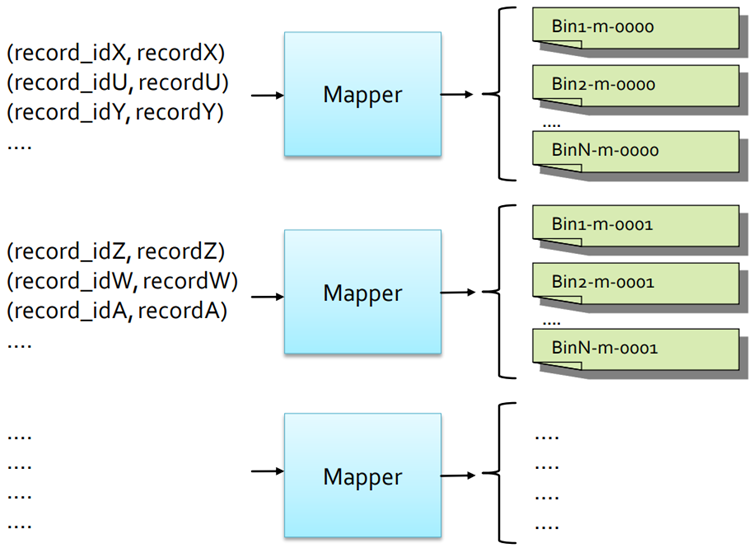

9 MapReduce patterns - 2
Data organization patterns
Data organization patterns are used to reorganize/split in subsets the input data
- Binning
- Shuffling
The output of an application based on an organization pattern is usually the input of another application(s)
Binning
The goal is to organize/move the input records into categories, to partition a big data set into distinct, smaller data sets (“bins”) containing similar records. Each partition is usually the input of a following analysis.
This is done because the input data set contains heterogonous data, but each data analysis usually is focused only on a specific subsets of the data.
Structure
Binning is based on a Map-only job
- Driver sets the list of “bins/output files” by means of
MultipleOutputs - Mappers select, for each input
(key, value)pair, the output bin/file associated with it and emit a(key,value)in that file- key of the emitted pair is key of the input pair
- value of the emitted pair is value of the input pair
- No Combiner or Reducer is used in this pattern

Shuffling
The goal is to randomize the order of the data (records), for anonymization reasons or for selecting a subset of random data (records).
Structure
- Mappers emit one
(key, value)for each input record- key is a random key (i.e., a random number)
- value is the input record
- Reducers emit one
(key, value)pair for each value in[list-of-values]of the input(key, [list-of-values])pair
Metapatterns
Metapatterns are used to organize the workflow of a complex application executing many jobs
- Job Chaining
Job Chaining
The goal is to execute a sequence of jobs (synchronizing them). Job chaining allows to manage the workflow of complex applications based on many phases (iterations). Each phase is associated with a different MapReduce Job (i.e., one sub-application), and the output of a phase is the input of the next one. This is done because real application are usually based on many phases.
Structure
- The (single) Driver contains the workflow of the application and executes the jobs in the proper order
- Mappers, reducers, and combiners: each phase of the complex application is implement by a MapReduce Job (i.e., it is associated with a mapper, a reducer, and a combiner, if it is useful)
More complex workflows, which execute jobs in parallel, can also be implemented, however, the synchronization of the jobs become more complex.
Join patterns
Are use to implement the join operators of the relational algebra (i.e., the join operators of traditional relational databases)
- Reduce side join
- Map side join
The explanation will focus on the natural join however, the pattern is analogous for the other types of joins (theta-, semi-, outer-join).
Reduce side natural join
The goal is to join the content of two relations (i.e., relational tables) when both tables are large.
Structure
There are two mapper classes, that is one mapper class for each table. Mappers emit one (key, value) pair for each input record
- Key is the value of the common attribute(s)
- Value is the concatenation of the name of the table of the current record and the content of the current record
Example: join pattern
Suppose join the following tables have to be joined
- Users with schema userid, name, surname
- Likes with schema userid, movieGenre
The values userid=u1, name=Paolo, surname=Garza of the Users table will generate the pair
The values userid=u1, movieGenre=horror of the Likes table will generate the pair
(userid=u1, "Likes:movieGenre=horror")The reducers iterate over the values associated with each key (value of the common attributes) and compute the “local natural join” for the current key. So, they generate a copy for each pair of values such that one record is a record of the first table and the other is the record of the other table.
Example
The (key, [list of values]) pair
(userid=u1, ["User:name=Paolo, surname=Garza", "Likes:movieGenre=horror", "Likes:movieGenre=adventure"]) will generate the following output (key,value) pairs
(userid=u1, "name=Paolo, surname=Garza, genre=horror")
(userid=u1, "name=Paolo, surname=Garza, genre=adventure")
Map side natural join
The goal is to join the content of two relations (i.e., relational tables) when one table is large, while the other is small enough to be completely loaded in main memory (frequently one of the two tables is small).
Structure
This is a Map-only job
- Mapper class processes the content of the large table: it receives one input
(key,value)pair for each record of the large table, and joins it with the “small” table.
The distributed cache approach is used to “provide” a copy of the small table to all mappers: each mapper performs the “local natural join” between the current record (of the large table) it is processing and the records of the small table (that is in the distributed cache).
Notice that the content of the small table (file) is loaded in the main memory of each mapper during the execution of its setup method.

Other join patterns
The SQL language is characterized by many types of joins
- Theta-join
- Semi-join
- Outer-join
The same patterns used for implementing the natural join can be used also for the other SQL joins.
The “local join” in the reducer of the reduce side natural join (in the mapper of the map side natural join) is replaced with the type of join of interest (theta-, semi-, or outer-join).